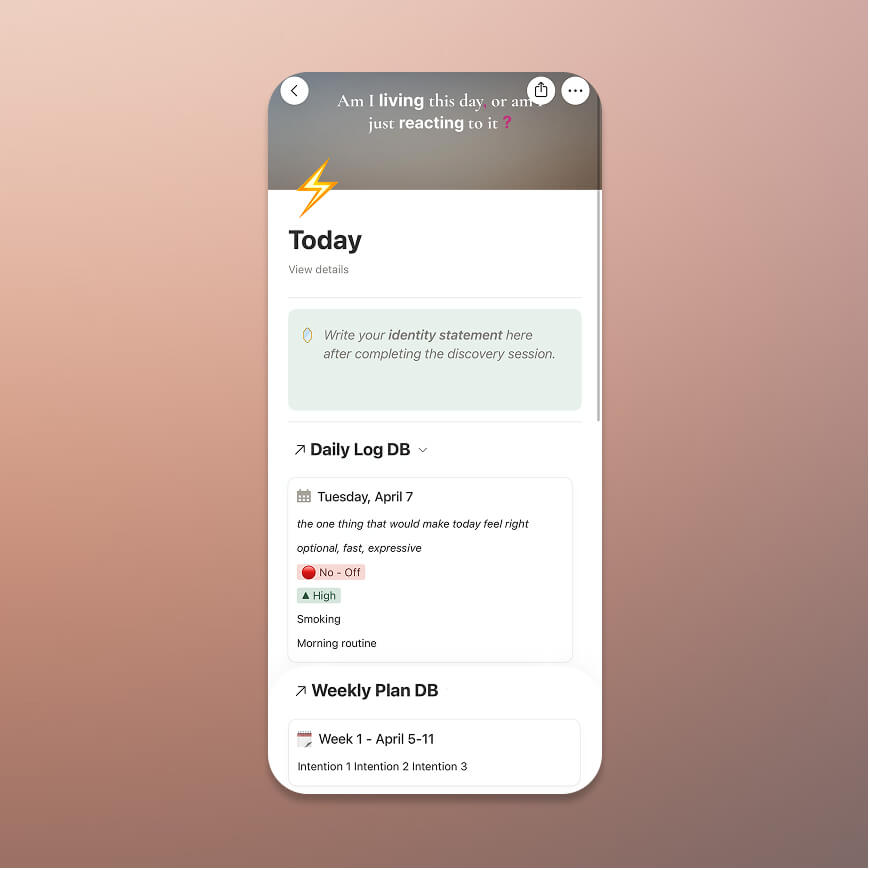
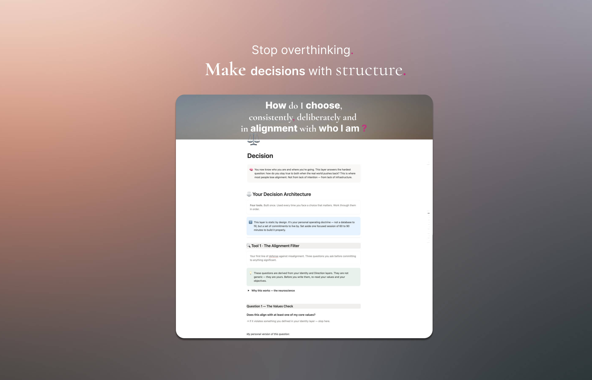
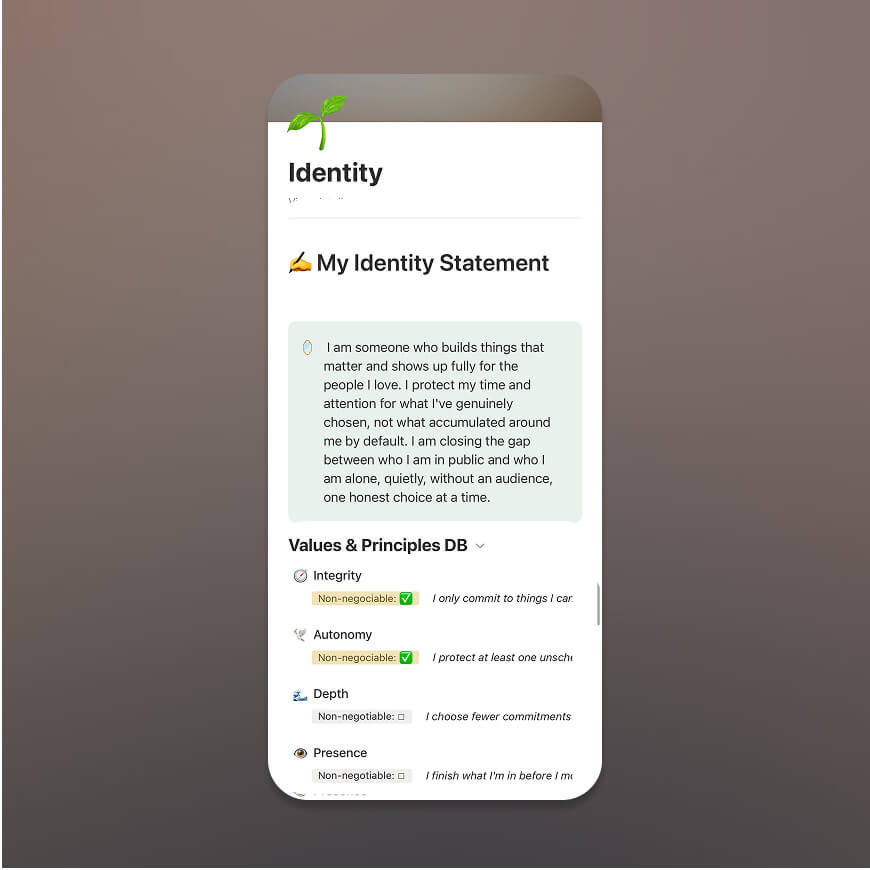
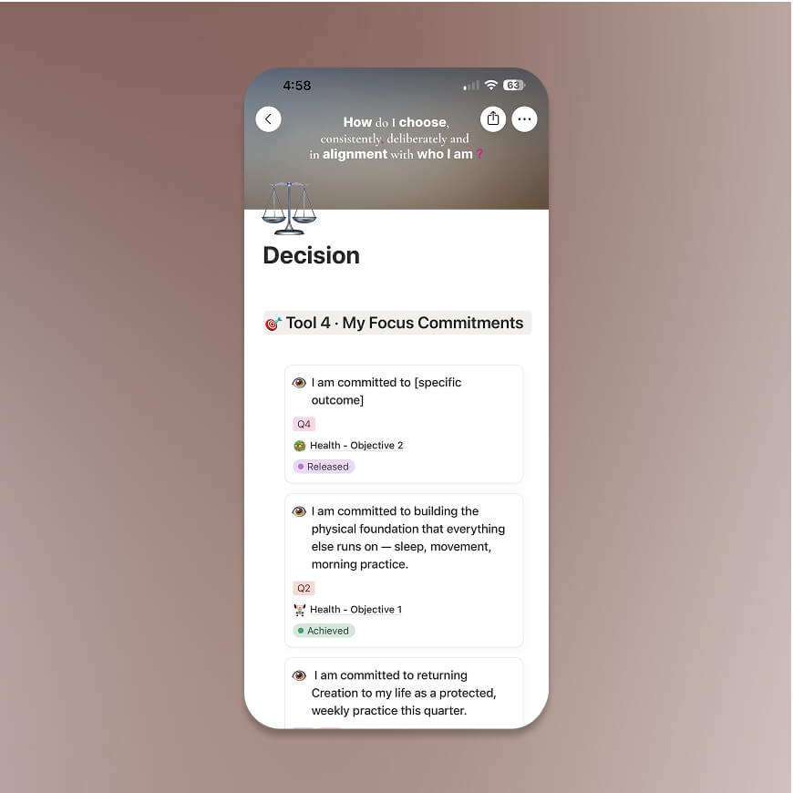

Daily Operating Dashboard
Know exactly what matters today and what to do next.
Alignment OS
Alignment OS helps you finally know what to do, make clear decisions, and follow through every week.
You’re not lazy.
You’re not inconsistent.
You’re misaligned.
There’s a gap between what you know —
and what you actually do.
Alignment OS closes that gap.

You think. You plan. You want to move forward. But when it’s time to act — you hesitate.
You start things and don’t finish them. You feel capable, but inconsistent.
That’s not laziness.
It’s misalignment.

Alignment OS gives you a structured way to think, decide, and act — without confusion.
Not a planner.
Not a habit tracker.
A system for operating your life with intention.

Identity → Direction → Decision → Execution → Reflection
You don’t just plan your week.
You align your actions with who you are.

This is how you operate your life inside the system.

Know exactly what matters today and what to do next.

Define who you are so your actions stop being random.

Make decisions with clarity instead of emotion.
Clarify who you are and what matters.
Turn vague goals into clear direction.
Know what to say yes or no to.
Turn decisions into daily action.
Continuously improve your system.
Guided thinking built into your workflow.
A complete system to think clearly, decide better, and act consistently.
One-time purchase.
Lifetime access.
Free updates.
Instant access via Notion template.
Early version price — will increase later.
You don’t need more motivation.
You need a system that works every day.
“You’re not the problem. Your system is.”